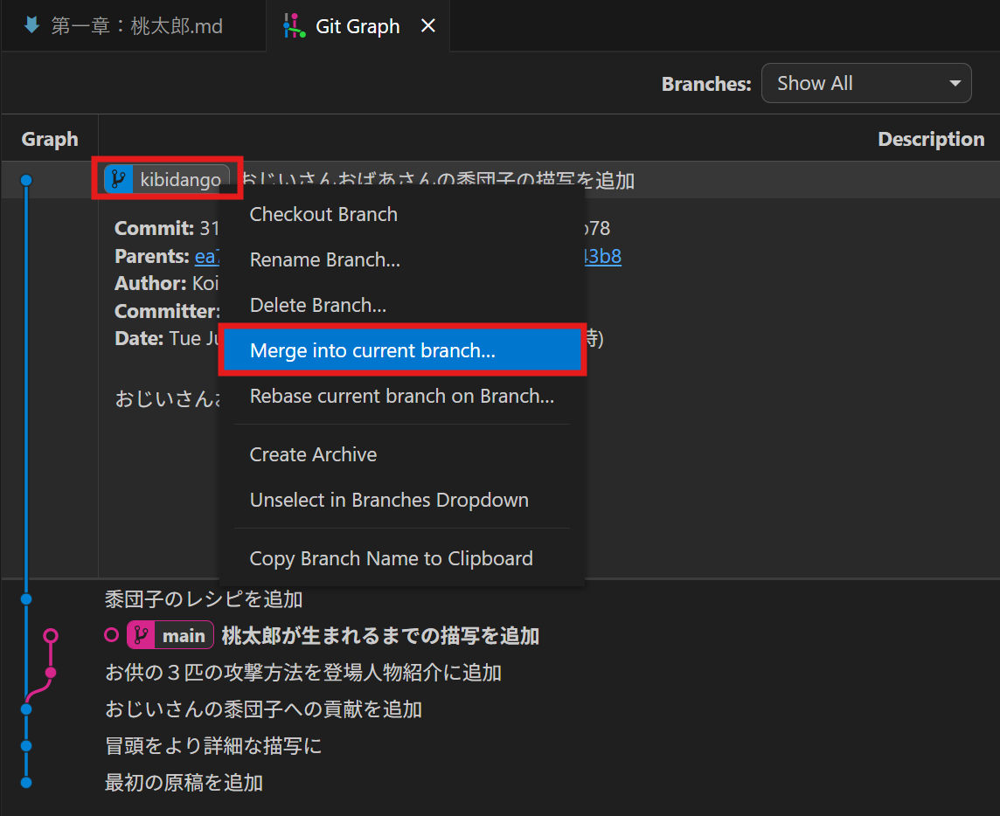
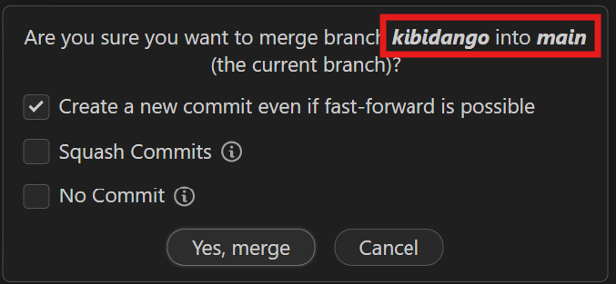
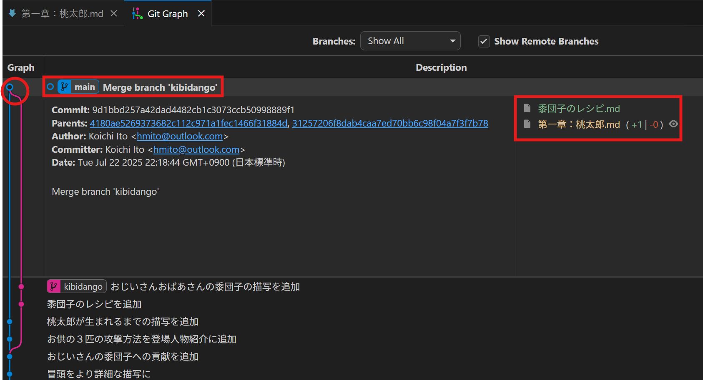
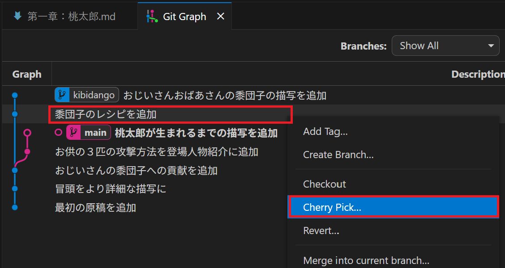
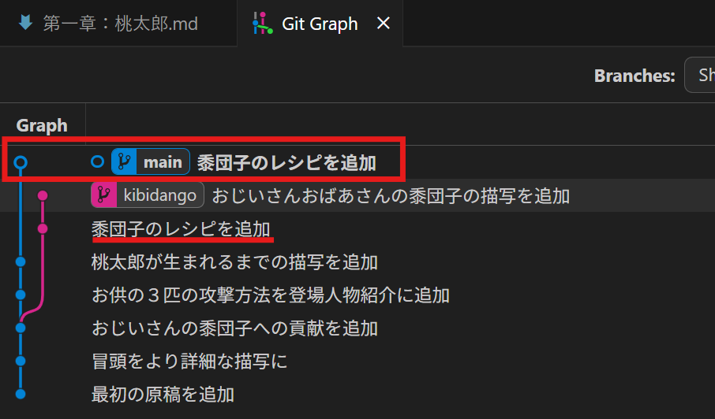
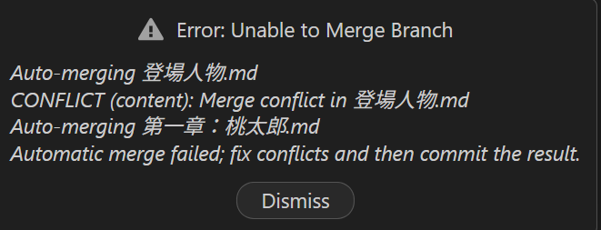
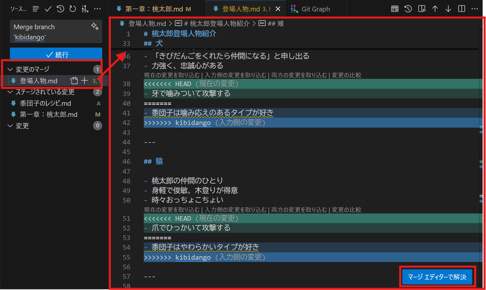
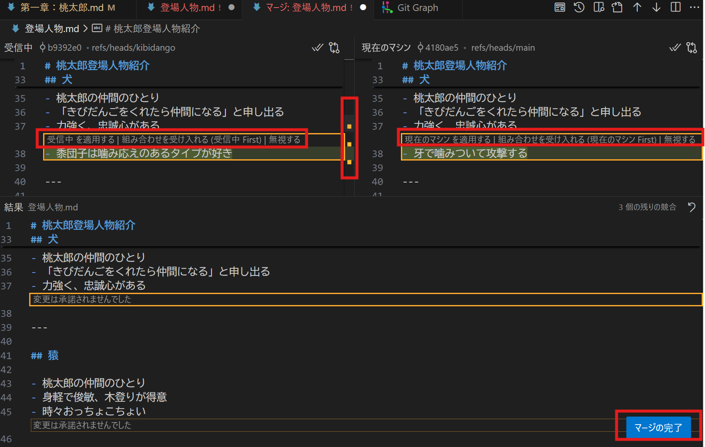
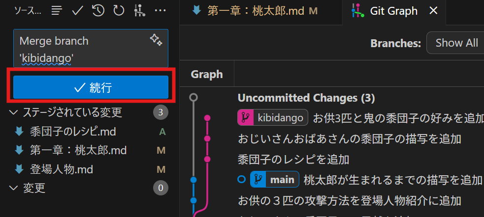
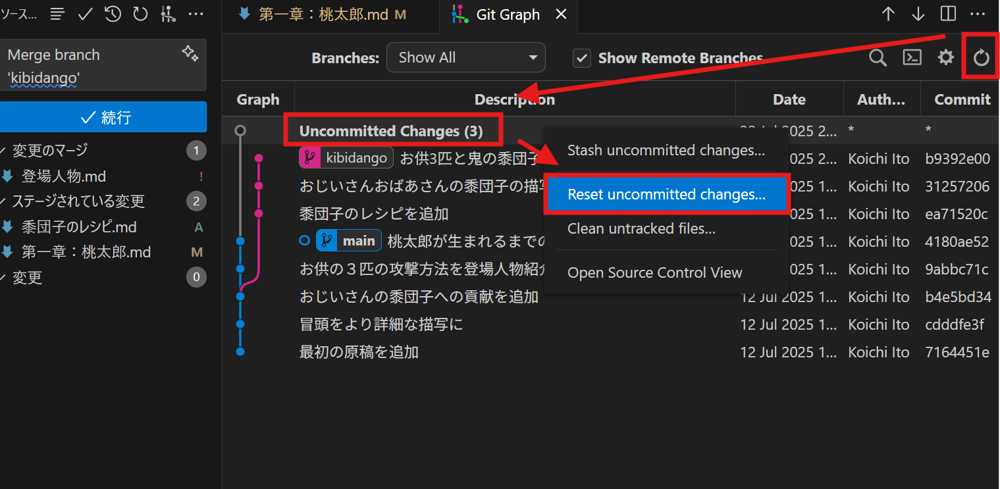

マージとコンフリクト
このページでは、ブランチにおけるコミットを他のブランチにも反映する手順についてみていきます。
マージ
ブランチの目的は、「安定版で計算したい」「新機能を開発したい」「バグを治したい」などの目的ごとに作業環境を丸ごと切り替えることでした。しかし、新機能の開発が完了したら、当然安定版にも反映したくなります。重要なバグの修正は、複数の作業環境それぞれに反映したいでしょう。
あるブランチにおける変更を別のブランチにも取り込む操作を、マージ merge と呼びます。取り込まれる対象となるのは、2つのブランチが最後に分岐してから行われた全てのコミットです。つまり、取り込まれる側のブランチにおける全ての変更が反映されることになります。
マージの操作は以下の通りです。
- まず取り込む側のブランチにHEADを切り替える（ブランチ名のタグをダブルクリック）
- 次に、取り込みたいブランチラベルを右クリックし、「Merge into current branch」を選択

- Merge用の小さな画面が開く。上部に「… merge branch マージされるブランチ into 現在のブランチ」と表示されていることを確認して、「Yes, merge」を選択

この操作で、自動的に「Merge branch …」というメッセージを持つマージコミットと呼ばれるコミットが作成されます。マージコミットの左側では、マージされた側のブランチからマージしたブランチへと合流するラインがひかれます。マージコミットの中身を確認すると、マージされる側において分岐後に行われた全てのコミット（下の例では「黍団子のレシピの追加」と「おじいいさんおばあさんの黍団子の描写を追加」の二つのコミット）の内容が含まれているはずです。

エラーメッセージが表示された場合は、次のコンフリクトを確認してみてください。
マージには方向性がある点に注意してください。
チェリーピック
分岐後のすべての変更ではなく、あるブランチにおける特定のコミットのみを現在のブランチに取り込むこともできます。この操作を、チェリーピック cherry pick と呼びます。
cherry pickとは、サクランボの熟したものだけを選んで食べる様から転じて、「つまみ食い」を意味する表現です。まさに、ほかのブランチにある特定のコミットだけつまみ食いしているわけです。
チェリーピックの操作は以下の通りです。
- まず取り込む側のブランチにHEADを切り替える（ブランチ名のタグをダブルクリック）
- 次に、取り込みたいコミットのメッセージなど、ブランチラベル以外のエリアを右クリックし、Cherry Pickを選択

- cherry pick用の小さな画面が開くので、「Yes, cherry Pick」を選択
この操作で、取り込みたいコミットがコミットメッセージなども新たに現在のブランチに追加されたはずです。しかし、マージのようなブランチの合流線は描かれません。

エラーメッセージが表示された場合は、次のコンフリクトを確認してみてください。
編集の競合：コンフリクト
チェリーピックやマージは、二つの異なるブランチ間で行われた変更を統合する作業です。それでは、もし二つのブランチが同一のファイルを編集していた場合、どうなるでしょう？ この場合でも、変更が異なる箇所（例えばファイルの先頭と末尾）に行われている場合には、両方の変更がうまく残されます。しかし、もし同一の箇所が変更されていたり、ファイル自体が削除されている場合では、編集の競合：コンフリクトが発生します。
コンフリクトが発生すると、以下のようなエラーメッセージが表示されます。

「Dismiss」（却下）を選ぶと、マージコミットは作成されておらずマージ前に戻っているように見えますが、ソース管理画面ではすでにコミットメッセージが入力されており、その下部には「変更のマージ」というファイルがステージ済みのファイルなどとともに表示されているはずです。ここに記載されているファイルが、コンフリクトが発生したファイルです。クリックすると、コンフリクトの詳細を確認できます。

コンフリクトの解決方法は、コンフリクトの原因と期待する解決策によって異なります。
同一箇所への編集によるコンフリクトの解決
コンフリクトの解決は簡単です。まず、コンフリクトが発生したファイルをクリックした際に右下に表示される「マージエディターで解決」を選択します。すると、「マージ：ファイル名」というタブが新たに開きます。

この画面では、上部の左側にマージされる側のブランチ、右側に現在のブランチのファイルの状態が示されています。スクロールバーでは、コンフリクトが発生した位置が黄色く表示されています（上の例では3か所）。画面下部では、コンフリクトを解決した後のファイルが表示されます。解決は、以下のいずれかの方法をとります。
- どちらかの変更を反映したい場合、反映したい側で「（現在のマシン/受信中）を適用する」ボタンを押す
- 両方の変更を残したければ、両側で押すか、「組み合わせを宇井家入れる」を選ぶ
- どちらの変更も反映したくなければ、「無視する」を両側で選ぶ
- 画面下部で手動で編集して解決することもできる
解決済みになると、スクロールバー上の表示が黄色から灰色に変わります。全てのコンフリクトを解決後、画面右下の「マージを完了」を押します。これで、当該ファイルは「変更のマージ」から「ステージされている変更」に移動します。
他にもコンフリクトが発生しているファイルがあれば、同様の手順で解決します。すべてのファイルが「ステージされている変更」に移動したら、続行ボタンを押します。これで無事マージは終了です。

ファイルの削除に伴うコンフリクトの解決
一方ではファイルが削除、または移動されてしまっていることによるコンフリクトが起きることもあります。この場合、ソース管理画面で「変更のマージ」にあるファイルを選んでも、「マージエディターで解決」ボタンは表示されません。
この場合は、ファイルを右クリックし「変更をステージ」を選んでください。ファイルを削除するか残すかを選択できます。
マージの中止
コンフリクトが発生した場合、マージ自体を中止したいかもしれません。この場合、以下の手順でマージを中止できます。
- GitGraphの上部右端にあるRefreshボタンを押す
- 「Uncommitted Changes」という表示が履歴の最上部に現れるので、右クリックし「Reset Uncommitted Changes」を選ぶ
- Resetの確認画面が表示されるので、「Mixed」ではなく「Hard」を選び、「Yes, reset」を選択する

以上の手順で、マージ前の状態に戻すことができます。
ブランチに基づく開発
ここまで、ブランチを用いることで、複数の「作業環境」を目的ごとに作成、管理し、必要に応じてほかの作業環境へも変更内容を取り込めることを見てきました。しかし、実際のプロジェクトを進めるときには、具体的にはどのようにブランチを使用すればよいのでしょうか？
ブランチの利用には厳密なルールはありませんが、目安となる「ブランチ戦略」と呼ばれる運用手法がいくつか存在します。以下はその代表的なスタイルのひとつです。
最も基本的なルールでの運用は、「main」「feature」「fix」の3種類のブランチに分ける方法です。
- 「main」ブランチは、安定版（＝バグがない、実際に計算に活用する）です
- 原則として、「main」ブランチには直接コミットしません
- 新機能の開発は、「feature」ブランチ使用します
- まず「main」ブランチから「feature/機能名」ブランチを作成・分岐します。機能名の部分は、追加する機能の名称などにします（例:feature/seasonal_dynamics）
- 「feature/機能名」上で開発を進めます。
- 機能が完了し十分安定すれば、「feature/機能名」ブランチを「main」ブランチにマージし、機能を取り込みます
- バグ修正には、「fix」ブランチを使用します。
- まず「main」ブランチからバグ修正ブランチ「fix/バグ名」を作成・分岐します。バグ名の部分はfeature同様バグの内容です（例:fix/fitness_calc_error）
- 「fix/バグ名」上でバグ修正を進めます
- 修正が完了したら、「fix/バグ名」ブランチを「main」ブランチ（必要に応じて他の「feature/機能名」ブランチ）にマージし、修正内容を取り込みます
つまり、ファイルの編集・バグ修正はすべてmainから枝分かれしたfeature・fixブランチ上で行い、mainブランチはマージによってのみ進むことになります。
より安定性を重視するケースでは、安定版の前に開発版「develop」を置くこともあります。この場合、運用ルールは以下のように変わります（変更点は太字）。
- 「main」ブランチは、安定版（＝バグがない、実際に計算に活用する）です
- 原則として、「main」ブランチには直接コミットしません
- 新機能の開発は、「feature」ブランチ使用します
- まず「develop」ブランチから「feature/機能名」ブランチを作成・分岐します
- 「feature/機能名」上で開発を進めます。
- 機能が完了し十分安定すれば、「feature/機能名」ブランチを「develop」ブランチにマージし、機能を取り込みます
- 「develop」ブランチが十分安定したら、「main」ブランチにマージする
- バグ修正には、「fix」ブランチを使用します。
- まず「main」ブランチからバグ修正ブランチ「fix/バグ名」を作成・分岐します。バグ名の部分はfeature同様バグの内容です（例:fix/fitness_calc_error）
- 「fix/バグ名」上でバグ修正を進めます
- 修正が完了したら、「fix/バグ名」ブランチを「main」ブランチ（必要に応じて「develop」ブランチや「feature/機能名」ブランチ）にマージし、修正内容を取り込みます
このケースでは、「develop」ブランチが「main」ブランチへのマージの前に挟まることで、より「main」ブランチの安定性を高めることができます。
このようなルールを用いることで、ブランチごとの役割が明確になり、開発の流れや履歴が把握しやすくなります。
ただし、上記はあくまで目安です。例えば、研究に用いるプログラムの場合は、個々の計算時のパラメータ設定等の編集に使うブランチである「analysis/計算目的」や、論文発表用にコードを整えるためのブランチ「release/論文名」などを作成してもよいかもしれません。
gitにおいて、ブランチは気軽に作成・削除するものです。重要なことは、mainブランチはあくまで安定版として残しておくことです。新しい改良を思いついたら、とりあえずfeatureブランチを切って試してみる、くらいの気軽さで使ってみましょう。上手くいけばマージすればいいし、仮に失敗してもそのまま放置しておけばよいのです。運が良ければ、後で気が向いてもう一度そのブランチを触ってみる気になるかもしれません。